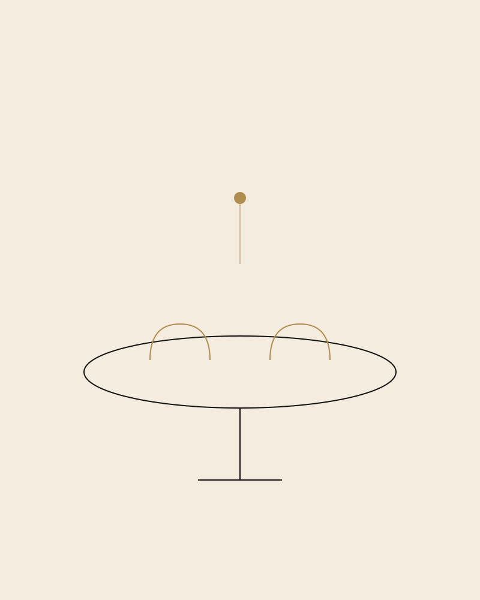
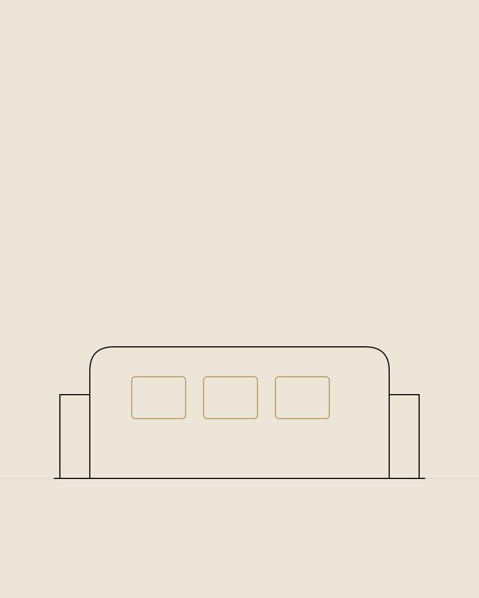
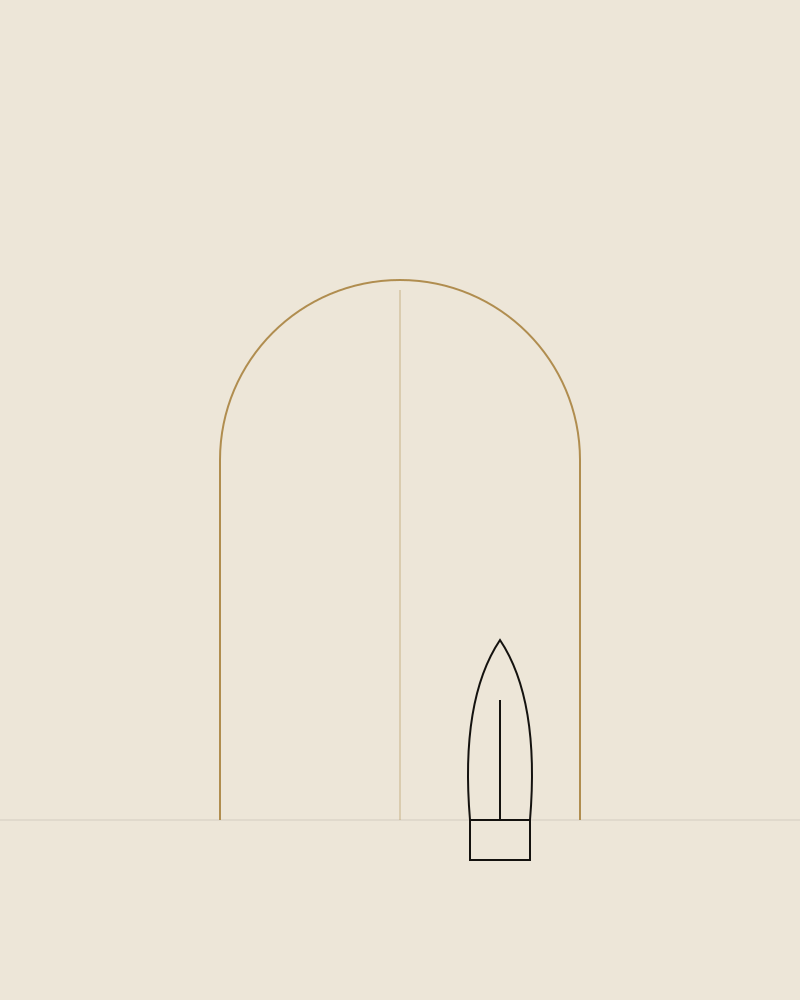

Rezidențial · București
Apartament
Apartament
Herăstrău
Concept
O zonă de dining gândită ca punct central al casei.
Familia primește des invitați, așa că masa de dining a devenit inima proiectului — restul apartamentului a fost organizat în jurul ei.
Am optat pentru o masă ovală din lemn masiv, scaune tapițate în catifea bej și un candelabru discret din alamă, poziționat exact deasupra centrului mesei. Bucătăria deschisă, finisată în tonuri de ivoire cu blat de piatră naturală, continuă aceeași paletă, pentru o tranziție lină între zonele de gătit și de socializare.
Dormitoarele au primit un tratament mai intim, cu textile mai închise la culoare și iluminat cald, difuz.
Galerie
Detalii din Proiect

